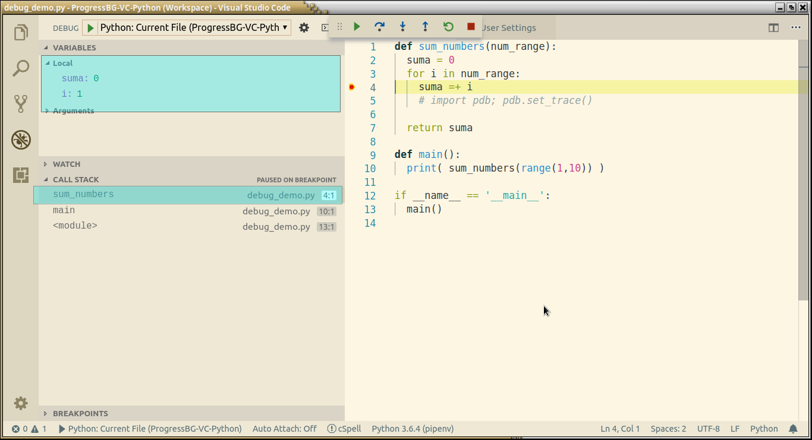

Keyboard shortcuts:
N/СпейсNext Slide
PPrevious Slide
OSlides Overview
ctrl+left clickZoom Element
If you want print version => add '
?print-pdf' at the end of slides URL (remove '#' fragment) and then print.
Like: https://wwwcourses.github.io/...CourseIntro.html?print-pdf
Debugging Python applications
Created for
Iva E. Popova, 2016-2024,

Introduction to Debugging
- What is Debugging?
- Debugging is the process of identifying and fixing errors, or bugs, in software code.
- Importance of Debugging
- Effective debugging ensures that software functions correctly, improving reliability and user satisfaction.
- Common Causes of Bugs
- Bugs can arise from syntax errors, logical errors, or unexpected behavior of libraries and dependencies.
Debugging with print and logging
Debugging with Print Statements
- You can trace your code by putting a print statements in the problematic places
- Pros:
- Easy to use
- Cons:
- You have to remove them in production ready code
- Too much useless typing
- Example:
- Consider a function that calculates the factorial of a number. Adding print statements can help identify issues:
def factorial(n):
result = 1
for i in range(1, n+1):
result *= i
# trace the values of i and result:
print(f"i: {i}, result: {result}")
return result
print(factorial(5))
# i: 1, result: 1
# i: 2, result: 2
# i: 3, result: 6
# i: 4, result: 24
# i: 5, result: 120
# 120
Debugging with Logging module
Overview
- The logging module provides a flexible framework for logging messages from Python applications.
- While print statements and debugger tools like pdb are helpful for inspecting code execution during development, logging offers a more systematic and flexible approach to tracking the flow of execution, identifying errors, and monitoring the behavior of an application in production environments. Here's why logging is beneficial for debugging:
- Persistent Output: Unlike print statements, which output information to the console during runtime, logging allows you to store messages in files or other destinations, providing a persistent record of the application's behavior. This is particularly useful for debugging issues that occur intermittently or in production environments where real-time monitoring is necessary.
- Multiple Log Levels: The logging module in Python supports different log levels (e.g., DEBUG, INFO, WARNING, ERROR, CRITICAL), allowing you to categorize messages based on their severity. This enables developers to focus on relevant information during debugging while filtering out less important details.
- Configuration Options: Python's logging module provides extensive configuration options, allowing you to customize log formatting, output destinations (e.g., files, streams, sockets), and filtering mechanisms. This flexibility makes it easy to adapt logging to different debugging scenarios and environments.
- Integration with Libraries: Many third-party libraries and frameworks in the Python ecosystem use the logging module for their own logging purposes. By leveraging a consistent logging approach across your entire application stack, you can streamline debugging and troubleshooting efforts, especially in complex projects with multiple dependencies.
Example: log to file
- Here is the content of "factorial.log":
import logging
# Configure logging
logging.basicConfig(filename='factorial.log', level=logging.DEBUG)
def factorial(n):
result = 1
for i in range(1, n+1):
result *= i
logging.debug(f"i: {i}, result: {result}")
return result
print(factorial(5))
DEBUG:root:i: 1, result: 1
DEBUG:root:i: 2, result: 2
DEBUG:root:i: 3, result: 6
DEBUG:root:i: 4, result: 24
DEBUG:root:i: 5, result: 120
Example: output messages to both a log file and the console:
import logging
# Configure logging to output messages to both console and file
logging.basicConfig(level=logging.DEBUG,
handlers=[
logging.FileHandler('example.log'), # write log messages to a file
logging.StreamHandler()] # output log messages to the console
)
def factorial(n):
result = 1
for i in range(1, n+1):
result *= i
logging.debug(f"i: {i}, result: {result}")
return result
def main():
logging.info("Starting factorial calculation...")
result = factorial(5)
logging.info(f"Factorial of 5 is: {result}")
if __name__ == "__main__":
main()
Logging Levels and their Hierarchy
Logging Levels
- DEBUG
- Detailed information, typically of interest only when diagnosing problems.
- INFO
- Confirmation that things are working as expected.
- WARNING
- An indication that something unexpected happened, but the software is still functioning as expected.
- ERROR
- A more serious problem that might cause the application to malfunction.
- CRITICAL
- A critical error that could lead to application failure.
Logging Hierarchy
- The levels are hierarchically ordered from least severe (DEBUG) to most severe (CRITICAL).
- DEBUG < INFO < WARNING < ERROR < CRITICAL
- By setting the logging level, messages of that level and higher in the hierarchy will be logged.
- Example
- If the logging level is set to WARNING, only messages with WARNING level and above will be logged.
import logging
# Configure logging to output messages to console
logging.basicConfig(level=logging.WARNING)
# Log messages at different levels
logging.debug("Debug message - Detailed information for debugging purposes")
logging.info("Info message - Confirmation that things are working as expected")
logging.warning("Warning message - Something unexpected happened, but the software is still functioning")
logging.error("Error message - A more serious problem that might cause the application to malfunction")
logging.critical("Critical message - A critical error that could lead to application failure")
# WARNING:root:Warning message - Something unexpected happened, but the software is still functioning
# ERROR:root:Error message - A more serious problem that might cause the application to malfunction
# CRITICAL:root:Critical message - A critical error that could lead to application failure
Logging Format
- The Logging Format controls the structure and style of log messages, including timestamp, log level, and message content.
- Developers can customize the logging format according to their specific requirements by specifying the desired components and their arrangement using format placeholders.
- Typical elements include timestamp, log level, module name, function name, and message content.
- Example - set up logging with a custom format:
import logging
# Configure logging with custom format
logging.basicConfig(format='%(asctime)s - %(levelname)s - %(message)s', level=logging.DEBUG)
# Log messages
logging.debug("Debug message")
logging.info("Info message")
logging.warning("Warning message")
logging.error("Error message")
logging.critical("Critical message")
Modular Logging
- Modular logging is a logging approach where each module uses its own logger object to emit log messages.
- In large applications, different modules may need independent logging behavior, such as setting different logging levels, formatting, and output destinations.
- You can create a Logger instance, use the getLogger() function from the logging module.
""" Module: database.py """
import logging
# Initialize logger
logger = logging.getLogger('database')
logger.setLevel(logging.WARNING)
# Configure console handler
console_handler = logging.StreamHandler()
# Configure formatter
formatter = logging.Formatter('%(name)s:%(levelname)s:%(message)s')
console_handler.setFormatter(formatter)
# Add console handler to logger
logger.addHandler(console_handler)
# Log messages using the logger
logger.debug('Debug message')
logger.info('Info message')
logger.warning('Warning message')
logger.error('Error message')
logger.critical('Critical message')
Debug Python with VS Code
Debug Python with VS Code
Overview
- The Python extension supports debugging of a number of types of Python applications, including the following general capabilities:
- Breakpoints: Set breakpoints in your code to pause execution and inspect variables.
- Step Through Code: Step through your code line by line using step into, step over, and step out commands.
- Watch and Variables: View and monitor variable values in real-time using watch and variables views.
- Debug Console: Execute Python code and evaluate expressions interactively in the debug console.
- Reference: Python debugging in VS Code
Start Debugger
- You can start VS Code debugger by:
- Pressing F5 or
- From Activity Panel cick on "Run and Debug" icon
- When you start VS Code Debugger for the first time, or if you don't yet have any configurations defined, you'll see a button to Run and Debug and a link to create a configuration (launch.json) file:
- A configuration drives VS Code's behavior during a debugging session. Configurations are defined in a launch.json file that's stored in a .vscode folder in your workspace.
- If you're only interested in debugging a Python script, the simplest way is to select the down-arrow next to the run button on the editor and select Python Debugger: Debug Python File.
- Reference: Initialize configurations
Debug actions
- Reference: Debug actions
| Command | Keyboard Shortcut |
|---|---|
| Continue / Pause | F5 |
| Step Over | F10 |
| Step Into | F11 |
| Step Out | Shift+F11 |
| Restart | Ctrl+Shift+F5 |
| Stop | Shift+F5 |
Breakpoints
- Breakpoints can be toggled by clicking on the editor margin
- Clicking with right mouse button on the editor margin allows to add "Normal Breakpoint", "Conditional Breakpoint", "Log Point"
- Conditional Breakpoints will be hit whenever the expression evaluates to true
- Finer breakpoint control (enable/disable/reapply) can be done in the Debug view's BREAKPOINTS section
- Breakpoints in the editor margin are normally shown as red filled circles.
- Reference: Breakpoints
Data inspection
- Variables can be inspected in the VARIABLES section of the Debug view or by hovering over their source in the editor.
- Variables and expression evaluation is relative to the selected stack frame in the CALL STACK section.
- Reference: Data inspection 
{kind=link}
pdb - The Python Debugger
pdb - The Python Debugger
Overview
- pdb defines an interactive source code debugger for Python programs at the source line level
- Pros:
- you can use it on remote servers running Python
- Cons:
- requires time to master
import pdb
def factorial(n):
result = 1
for i in range(1, n+1):
pdb.set_trace() # Start debugging session
result *= i
return result
print(factorial(5))
Debugging Best Practices
Writing Unit Tests
What is Unit Testing?
- Definition
- Unit testing is a software testing technique where individual units or components of a software application are tested in isolation to ensure their correctness.
- Benefits
- Unit tests help detect and prevent bugs early in the development process, improve code quality, and facilitate code refactoring and maintenance.
- unittest Module
- In Python, the unittest module provides a framework for writing and running unit tests.
Writing Unit Tests in Pyhton
- TestCase Class
- Test cases are defined by subclassing unittest.TestCase.
- Test Methods
- Each test case can have one or more test methods that verify specific behaviors or functionalities of the code being tested.
- Assertions
- Assertions are used to verify expected outcomes and compare actual results with expected values.
import unittest
def add(x, y):
return x + y
class TestAddFunction(unittest.TestCase):
def test_add_positive_numbers(self):
self.assertEqual(add(2, 3), 5)
def test_add_negative_numbers(self):
self.assertEqual(add(-2, -3), -5)
def test_add_mixed_numbers(self):
self.assertEqual(add(2, -3), -1)
if __name__ == '__main__':
# If the script is run directly (not imported as a module), the unit tests are executed with:
unittest.main()
# ...
# ----------------------------------------------------------------------
# Ran 3 tests in 0.000s
# OK
Running Unit Tests
- Command Line
- Unit tests can be executed from the command line using the `unittest` module's test discovery mechanism.
- Example
- Suppose we have a Python module named `test_example.py` containing unit test classes and methods:
- Command Line
- To run the unit tests from the command line:
- `python -m unittest test_example.py`
- IDE Integration
- Most IDEs, such as Visual Studio Code, provide built-in support for running and debugging unit tests.
import unittest
class TestExample(unittest.TestCase):
def test_something(self):
self.assertEqual(1 + 1, 2)
if __name__ == '__main__':
unittest.main()
Using Version Control (git)
Overview
- Version control systems like Git enable tracking changes, facilitating collaboration and error recovery.
- Branching in Git is a powerful feature that allows developers to create separate lines of development within a repository. One common use case of branching for debugging purposes is when you encounter a bug in your codebase that needs to be fixed without disrupting the main development workflow
- Example - Create a Git Repository and Debug Branch:
- Once the bug has been successfully debugged and fixed in the debug-authentication branch, you have two options:
- If the changes are effective and have been thoroughly tested, you can merge the debug-authentication branch into the main development branch (master or develop).
- If the changes are not effective or if you decide to take a different approach, you can discard the debug-authentication branch without affecting the main codebase.
# Initialize Git repository
git init
# Add files to staging area
git add .
# Commit changes into default branch (main)
git commit -m "Initial commit"
# Create and switch to a new branch named "debug-authentication" specifically for debugging the authentication issue.
git checkout -b debug-authentication
git checkout main
git merge debug-authentication
git checkout main
git branch -D debug-authentication
These slides are based on
customised version of
framework